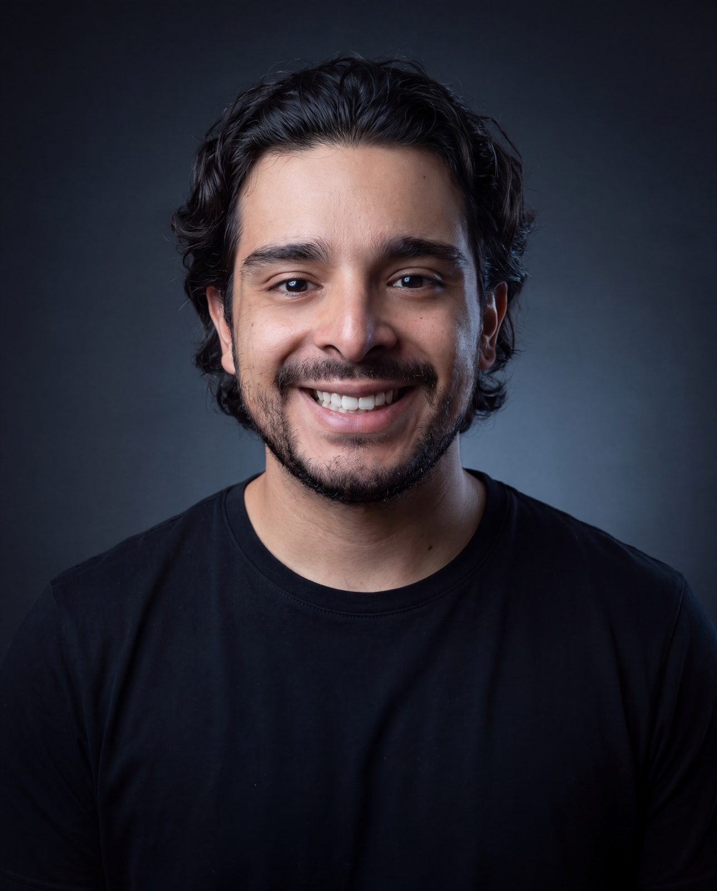

01 · Por qué escribo esto
Un contrato, no una bio.
"El hombre sabio debe únicamente seguir los caminos que abrieron otros, tenidos por superiores, e imitar bien a los que han sobresalido, a fin de que, si no se consigue igualarles, se les acercase al menos una cosa." — Nicolás Maquiavelo
Me lo tomé literal. A los 24 escribí que eres el promedio de las cinco personas con las que te juntas — y decidí que mi promedio no iba a ser un accidente. Me rodeé, a propósito, de mentores y maestros que ya habían subido montañas que yo apenas veía de lejos: multimillonarios y expertos, cada uno excelentísimo en un terreno distinto — lo espiritual, las finanzas, la tecnología, la inversión, la educación financiera.
De esa mesa aprendí y sigo aprendiendo: Ricardo Zuribia, Esteban Echevarría de MVD Trading Academy, Julián Alborna, Ricardo Leyva, Juan Lombana, Eduardo Vázquez, Pedro "Triple P"… entre otros. A cada uno le debo una pieza distinta del mapa que hoy uso para subir. Pasar esta experiencia con seres humanos increíbles me ha llenado el alma.
Ray Dalio escribió sus principios para que su vida no fuera un misterio — ni para los demás, ni para él mismo — y esa idea me ordenó la cabeza: si voy a encender una cámara y dejar que me veas entrenar, leer, sentarme en silencio y operar los mercados, lo mínimo que te debo — y que me debo — es saber quién soy y bajo qué reglas juego. Y una promesa más concreta: como fundador de Nex Digital, cofundador de Northpoint y de los negocios que se vayan sumando a esta aventura, aquí vas a aprender cómo se vive con autenticidad — decisiones reales, empresas reales, y la vida completa sin maquillar.
Esto no es una biografía pulida. Es el documento que me obliga a ser el mismo con la cámara encendida y apagada. Lo escribo para mí primero: no traicionarme y ser auténtico es lo que le da sentido a mi vida — eso lo firmé a los 24, antes de que existiera esta página. Si algún día notas diferencia entre lo que dice esta página y lo que ves en un directo, gana el directo — y me corriges.
Lo que se muestra sin editar no se puede maquillar después.
02 · De dónde vengo
Más archivos que lanzamientos.
Soy mexicano y construyo cosas para vivir. Fundé NEXUS, un estudio donde aplico inteligencia artificial y automatización a negocios reales — hoteles, comercios, marcas que necesitan sistemas que funcionen, no promesas. Opero futuros bajo un sistema de reglas escritas, con la pérdida máxima definida antes de abrir cada posición. Y el software con el que gestiono mi propio dinero no lo compré: lo escribí yo.
Ahora la parte que un perfil de LinkedIn no te diría: he fracasado en más negocios de los que he lanzado. La marca personal que pausé — doce páginas de arquitectura impecable donde todo decía "próximamente" — no fue la primera ni la única. Antes y después hubo más: negocios que no encontraron clientes, ideas que se quedaron en el logo, proyectos que murieron esperando a que yo dejara de tenerles miedo. Dolió cada uno. Y aun así, en medio de esos archivos, escribí "estoy feliz y agradecido con la vida" — y la sostengo. Cada uno se archivó con la verdad por delante.
Ese archivo de fracasos no es mi vergüenza: es mi currículum real, y cada fracaso fue un aprendizaje más. Uno me enseñó que la arquitectura sin sustancia es un experimento. Otro, que un negocio sin números es una historia que te cuentas. Otro, que el miedo solo es el empujón que necesitas para hacer las cosas con las que sueñas — me costó proyectos enteros entenderlo, pero nunca es tarde si tienes la voluntad de hacerlo hoy. GSNOW888 existe por esa escuela — esta vez la sustancia va primero, y si algo vuelve a fracasar, también se documenta.
Cada intento archivado no dice "fracasé". Dice "todavía no". Mi objetivo es el mismo — el plan puede cambiar.
03 · El nombre
Tres piezas, cero misterio.
Bueno — una.
G
De Gregorio
Un nombre, no un alias. Lo que pasa en cámara le pasa a una persona real — y eso me obliga a que sea verdad.
SNOW
La montaña que subo en vivo
No el resumen de la cima: la subida completa, con clima malo incluido. La nieve es el terreno, no la decoración.
888
Abundancia
No lo explico para venderte nada. Lo creo de verdad: al igual que Dios, soy un ser creador, y la abundancia se practica. Quien tenga que entenderlo, lo va a entender.
04 · El presente
Lo que hago hoy — y el sistema que lo ordena.
Trabajar por mis sueños es mucho mejor que trabajar para los sueños de alguien más. Hoy ese trabajo se ve así — tres frentes, tres proyectos con nombre propio:
Nex Digital
Founder
Estudio de IA y digital: sitios, automatización e inteligencia artificial aplicadas a negocios reales.
Visitar Nex Digital →Northpoint
Co-founder
Comunidad de trading e inversión para LATAM. Además, operativa propia de futuros con reglas escritas y líneas rojas no negociables.
Visitar Northpoint →CUATRO4TROS
El sistema, en público
La casa de todo esto: los streams del mercado, el video semanal, la Letter y el curso. Patrimonio con proceso.
Northpoint · El portafolio
Las estadísticas crecen adentro.
Cómo va creciendo el portafolio — los números y el proceso completo — se comparte únicamente con los suscriptores de Northpoint. Ahí está la cocina; aquí, la puerta.
Suscribirse a Northpoint →Rendimientos pasados no garantizan rendimientos futuros. Aviso legal
El sistema
Cuatro picos. Una sola subida.
Detrás de todo esto hay un sistema que ordena mi vida completa en cuatro pilares: CUERPO, MENTE, ALMA y DINERO. Todavía lo estoy puliendo para contarlo como se merece — por ahora, quédate con esto: cada directo, cada video y cada decisión que me veas tomar pertenece a uno de esos cuatro picos.
05 · El documento
24 cosas a los 24.
Hace un año, el día que cumplí 24, escribí una lista en mi teléfono. No era contenido: era un documento privado que empezaba así — "Hoy cumplo 24 años, y estoy feliz y agradecido con la vida… no ha sido fácil y todavía queda un camino muy importante en esta aventura." Lo publico casi intacto, solo con la ortografía peinada, porque un documento con fecha vale más que cualquier bio pulida.
"Yo ya había visto, en mis pensamientos, la versión en la que me he convertido hoy."
Si no lucho por mis sueños, no tengo nada por qué luchar.
Yo soy el único responsable de la realidad que quiero estar viviendo y de la vida que voy a vivir — y vivo.
Dios es parte de mí y yo soy parte de Dios.
Primero son mis pensamientos: tengo que tener clara la meta en mi mente para saber a dónde quiero llegar.
Mi objetivo es el mismo, pero el plan puede cambiar.
El ambiente influye en el jugador: estar con personas inteligentes y que me inspiran ha sido clave para saber a dónde quiero ir. Eres el promedio de las cinco personas con las que te juntas.
Mi cerebro es la máquina que mueve al cuerpo; alimentarlo sanamente y cuidar lo que consumo hace la diferencia.
Al igual que Dios, soy un ser CREADOR.
El mundo me va a olvidar probablemente en 100 años; disfrutaré la única vida que tengo.
Si no soy feliz con lo que ya tengo, no seré feliz con lo que el universo me va a dar.
Enfocarme en mí me ha dado mi paz mental.
El miedo solo es el empujón que necesitas para hacer las cosas con las que sueñas.
La sociedad me ha mentido; pensar fuera de la caja me ha dejado ver las oportunidades que están enfrente de mí.
El mundo puede estar en contra de mis valores y pensamientos, pero está en mí luchar por ellos.
No traicionarme a mí mismo y ser auténtico es lo que le da sentido a mi vida.
El amor, la abundancia y la paz mental: un privilegio que sí tengo.
Confiar en mi intuición ha sido clave para lo que me he convertido hoy.
Soy lo que pienso la mayoría del tiempo en mi estado subconsciente.
Todo lo que me proponga lo puedo lograr; solo es cuestión de tiempo y esfuerzo.
Trabajar por mis sueños es mucho mejor que trabajar para los sueños de alguien más.
Aprender y tomar en cuenta las acciones de las personas que admiro y que ya han logrado objetivos similares a los que quiero.
Vine al mundo a ser feliz.
Yo soy un reflejo de mis pensamientos.
Disfruto el proceso.
Un año después, varias de esas líneas ya maduraron en los principios de arriba: la 24 se convirtió en el principio 8 — comparto la subida porque disfruto la subida —, la 21 explica por qué cito a Dalio en vez de fingir que todo lo aprendí solo, y la 6 es la razón exacta de hacer esto con testigos. Algunas las firmaría hoy con más matices; otras todavía me las está cobrando la montaña. Así se ve un sistema creciendo en público: con fecha.
06 · A dónde va esto
No sé dónde termina la subida. Todavía.
Puede terminar en algo grande o en otro intento archivado con la verdad por delante. Las dos cosas me sirven: una construye, la otra enseña. Yo ya vi la versión en la que me voy a convertir — la vi primero en mis pensamientos, como todo lo que he logrado. Lo que falta es la parte que más me gusta: ganármela. Vine al mundo a ser feliz — y esto, construir y compartir la subida, es exactamente eso. Lo único que te puedo garantizar es lo que vas a ver mientras tanto — un tipo real haciendo el trabajo, 1% cada día, a la vista de cualquiera.
Si quieres verificarlo, no me creas: mira los directos. Y si prefieres el razonamiento por escrito, una vez a la semana lo mando por correo.
